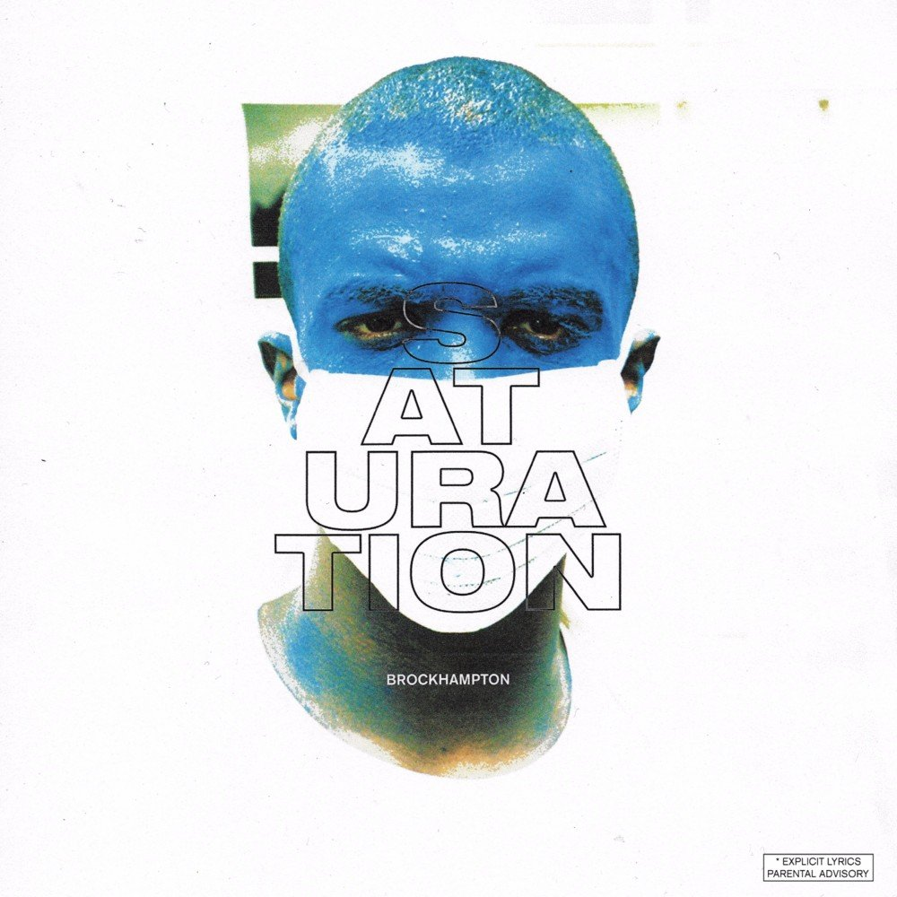
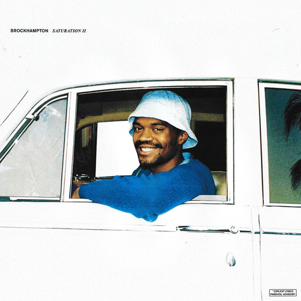
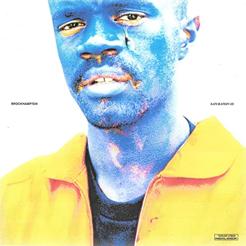
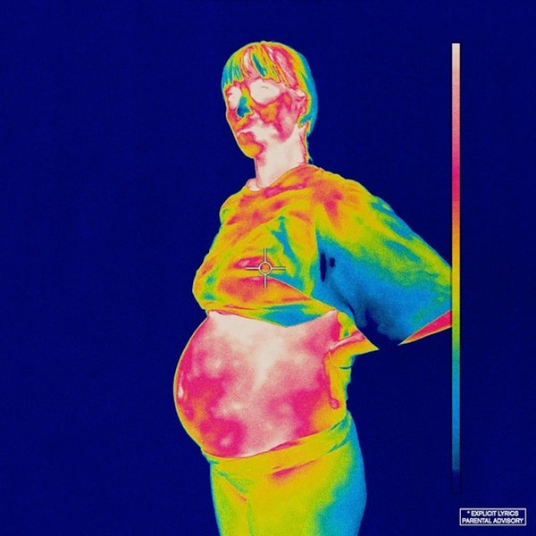
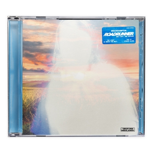

Saturation
Total length: 51:02
Critical reception
Saturation received general acclaim from music critics upon its release. DJBooth's Brent Bradley praised the group's chemistry, noting that "With Saturation, Brockhampton has cemented themselves as a force to behold, the next in an all-too-short line
of examples in which groups manage to fully realize their dynamic potential".For RadioUTD, Roman Soriano referred to the group's members as "highly talented", continuing that "it’s incredible to think that this was put together
in just three and a half weeks, given the complexity of this project", praising its "powerful lyricism, great storytelling, and ... cohesive but diverse sound". In a less positive review, Pitchfork's Matthew Strauss called the
album a "split between effortless cool and empty platitudes", praising the group's stylishness and assertiveness, but criticizing the album's less aggressive moments as "sappy", revealing "the collective’s lyrical weakness".
Critical reception
Saturation II received general acclaim from music critics upon its release, with most favouring it over its predecessor. For Fact, Al Horner called the album "sublime", commenting that "on the adventurous, quietly subversive Saturation II, [Brockhampton]
dare to imagine a better hip-hop world to blaze trails in". He however warned of a "suspicion that Brockhampton could do with reviewing their balance of quality versus quantity", criticizing "moments on Saturation II that reduce
its pace to a drag like the sluggish 'Chick'".
Reviewing the album for AllMusic, Neil Z. Yeung wrote that "building upon the promise of its predecessor, II is another genre-blurring collection
of thrills that's packed with even more wild energy and potential. The flurry of activity produced by this gang of strong personalities manages to be a cohesive and seamless experience."
In a positive review for Pitchfork,
Matthew Strauss praised the group's "sleek and cool performance style" and "aggression and swagger", as well as noting that the group have "ameliorated some of their more glaring flaws that existed on their debut". However, Strauss
criticized the group's chemistry, writing that "there are precious few moments where they complement each other or build on distinct themes", summarizing that "there remains a sense that no matter how cool BROCKHAMPTON sound, they
prize coolness more than they prize breaking molds and taking risks to become something bigger."
For PopMatters, Christopher Thiessen praised the group for "creat[ing] a new offering that is equally refreshing and enjoyable
by pretty much following their original formula to the letter".[16] In a joint review of the trilogy's first two installments for Pretty Much Amazing, Mick Jacobs wrote that "Brockhampton understands how to get your attention:
by addressing all the shit that's taking up yours right this moment", asserting that "where Saturation feels more upfront, II feels more mischievous, a willingness to twist things to their own perception".

Saturation II
Total length: 48:02

Saturation III
Total length: 46:17
Critical reception
Saturation III has received widespread acclaim from critics, with many citing it as the strongest in the Saturation trilogy. At Metacritic, which assigns a normalized rating out of 100 to reviews from mainstream publications, the album has an average
score of 82 based on 10 reviews, indicating "universal acclaim". For The Boston Globe, Isaac Feldberg praised "the sense that Brockhampton’s creative energies thrive most when every member’s strengths, and stories, are being utilized",
stating that the album "is entirely of a piece with its two predecessors; the disc exudes confidence on every front, though the group’s ambitions seem scaled up to world domination."
HipHopDX's
Marcus Blackwell described the album as "their strongest project yet",with Timothy Michalik of The 405 also describing it as "their smartest album to date", concluding that "this run of SATURATION albums have turned out to be among
2017’s finest musical achievements". He also said that the album is "the ultimate victory lap for a group who have stayed busier in the studio than some artists do in their entire career." For Pitchfork, Sheldon Pearce wrote that
"it's on their third album of the year that rap crew BROCKHAMPTON's whole gestalt comes into focus", praising the album's "memorable performances" and the "fascinatingly unorthodox compositions servicing them."
For HotNewHipHop,
Patrick Lyons praised the album's "beat change-ups and multi-genre excursions," however criticised the group's "thematic repetition and loss of stylistic grounding", concluding that "this trilogy is good-to-great, but I think its
lasting legacy could be that of a breeding ground for solo stars who are still finding their own footing." Clayton Purdom of The A.V. Club wrote that "like its predecessors, the album is hit or miss, but the batting average remains
uncommonly high for a project like this", concluding that "if it seems like there’s nothing these guys can’t do, it’s because there's nothing they're not willing to try."Reviewing the album for AllMusic, Neil Z. Yeung stated that
the album "entertains as much as its two predecessors" and called the Saturation trilogy overall "a fun, thoughtful, and unexpected experience from a group of highly creative young musicians."
Critical reception
Iridescence received critical acclaim. At Metacritic, which assigns a normalized rating out of 100 to reviews from mainstream publications, Iridescence received an average score of 85, based on 11 reviews, indicating "universal acclaim". DIY gave the
album a perfect score, with critic Will Richards writing, "Brockhampton have found a new sense of unity, and when Iridescence confronts every single one of these bumps, it proves that the band possess a truly special voice."Wren Graves
of Consequence of Sound wrote, "Iridescence is full-to-bursting; it's like almost eating too much food, almost drinking too much booze; it's getting close to too much, and still asking for more."
Sputnikmusic
opined that "Iridescence is the best Brockhampton album because it doesn't give a fuck what you think a Brockhampton album should sound like." NME's El Hunt wrote, "Far from making vague allusions to the events prior to Iridescence,
Brockhampton lay them bare, atop some of their most adventurous work to date."The Line of Best Fit critic Sam Higgins stated that "the more you listen, the more intricacies you notice. The more you listen, the more you realise just
how defining this record will be for the future of Brockhampton." In his review for AllMusic, Neil Z. Yeung stated, "Brockhampton absorbs what they need from across genres, sharing honest confessions from their varied personal backgrounds
(the most striking provided by group leader Kevin Abstract) and reflecting its mixed audience as a voice of their generation. Brockhampton have seized upon this defining moment with Iridescence, a defining peak in their young career."

Iridescence
Total lenght: 48:50
Ginger
Total lenght: 44:16
Ginger
Ginger was met with generally favorable reviews. At Metacritic, which assigns a normalized rating out of 100 to reviews from mainstream publications, the album received an average score of 75, based on 12 reviews. The aggregator Any Decent Music gave
the album a weighted average score of 6.5 out of 10, based on 7 reviews.
Amongst the more favourable reviews, AllMusic's Neil Z. Yeung described the album "As their most compact effort to date, Ginger wastes
little time, delivering a fully immersive and inventive genre-blurring exerience akin to contemporary-era releases by Tyler, the Creator and Frank Ocean." In a review for DIY, Elly Watson called the album the band's "most mature and
concise work to date," which "deliver some of their most raw and unfiltered verses so far." Sophie Walker reviewed the album for The Line of Best Fit, where she claimed that "Ginger yields a sound that is more emotionally evolved than
any album thus far. Where The Saturation Trilogy was raw youthfulness and Iridescence was loaded with erratic expression, Ginger is, at last, the coherence we have been searching for. Here is a band who have had the chance to breathe,
to live, to process – the result is Brockhampton have finally come of age."
David Skipworth was also receptive in an appraisal for The New Zealand Herald, stating it "showcases the myriad directions in which the group could
go and ultimately reassures fans that Brockhampton are here to stay."Reviewing the album for NME, Will Richards wrote "Brockhampton push themselves forward gently in musical terms... [The album] is the sound of the lyrical weight of
‘Iridescence’ being forcibly lifted off the band, with auto-tuned melodies floating around a catchy, snappy beat. It’s utter bliss." In the review for Variety, Brandom Yu declared that "With 'Ginger,' their fifth record in just over
two years, they’ve presented their tightest and potentially most memorable album yet. Across twelve tracks, the rap collective is noticeably more controlled and concise."
Roadrunner: New Light, New Machine
Roadrunner: New Light, New Machine was met with critical acclaim upon release. At Metacritic, which assigns a normalized rating out of 100 to reviews from professional publications, the release received an average score of 79, based on 13 reviews, indicating
"generally favorable reviews". Aggregator AnyDecentMusic? gave the album a 7.0 out of 10, based on their assessment of the critical consensus.
Amongst the positive reviews from critics, AllMusic's Neil
Z. Yeung said that the album served as a "masterful group therapy session, picking up the broken pieces of life and uplifting with cautious optimism." In June 2021, Billboard ranked the album among the best 15 albums released by LGBTQ
artists in 2021 so far.

Roadrunner: New Light, New Machine
Total lenght: 46:38